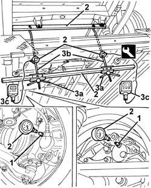
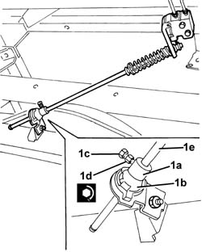

3330C62 LOAD PROPORTIONING VALVE CONTROL - CHECK AND ADJUST
- Path
- Procedures > 33 BRAKING SYSTEM > 3330 HYDRAULIC BRAKING SYSTEM > 3330C BRAKE PUMP, RESERVOIR AND LOAD PROPORTIONING VALVE > 3330C62 LOAD PROPORTIONING VALVE CONTROL - CHECK AND ADJUST
- Kind
- repair procedure (removal / refitting; the operation number is the code)
- Applies to
- all engines; all production periods
- Interactive page
- https://sloeber94.github.io/elrnDB-fDct/en/#/244001107
Applies to: all engines; all production periods
- Measure the weight of the rear axle on the ground and make a note of it.
- Position the vehicle on the lift.
- Remove the spare wheel and housing.
1. Remove the bleed screws for the front brake caliper and the rear brake caliper on the same side.
2. Position the special equipment on the vehicle.
 | Description | Code | Function |
|---|---|---|---|
2 | Tool kit | 1.870.858.000 | Load proportioning valve calibration |
3. Act on the handwheels (3a) tensioning the rods (3b) until the load determined by the following formula is measured on each of the torque wrenches (3c).
- [900 / 2] - [weight on the ground (in Kg) on the rear axle / 2] = load (in Kg) to be measured on each of the torque wrenches (3c).

Applies to: all engines; all production periods
1. In the conditions described above, start the engine then operate the brake pedal until a pressure of 80 bar is reached on the front brake pressure gauge; under these circumstances the pressure reached on the gauge for the rear brake should correspond to the figure on the plate on the door of the vehicle in rear axle load conditions of 900 kg. If necessary, keeping the pawl (1a) in contact with the element (1b) gently slide the rod (1e) until the required pressure is reached for the rear brake. When the desired condition is achieved, fasten the pawl (1a) tightening the bolt on the head (1c) until the actual head breaks (10 spanner). If the load proportioning valve does not have a head (1c), tighten the bolt on the head (1d) to the recommended torque.
 | Value - daNm | Fastening | Component | Ø |
|---|---|---|---|---|
1 | 0.9 - 1.3 | Bolt | LOAD PROPORTIONING VALVE | M8 |

Applies to: all engines; all production periods
- Remove the equipment from the vehicle.
- Retighten the bleed screws.
Op. 0010T65 HYDRAULIC BRAKE SYSTEM BLEED AIR
- If necessary, < R1 >
- Test the operation of the braking system.